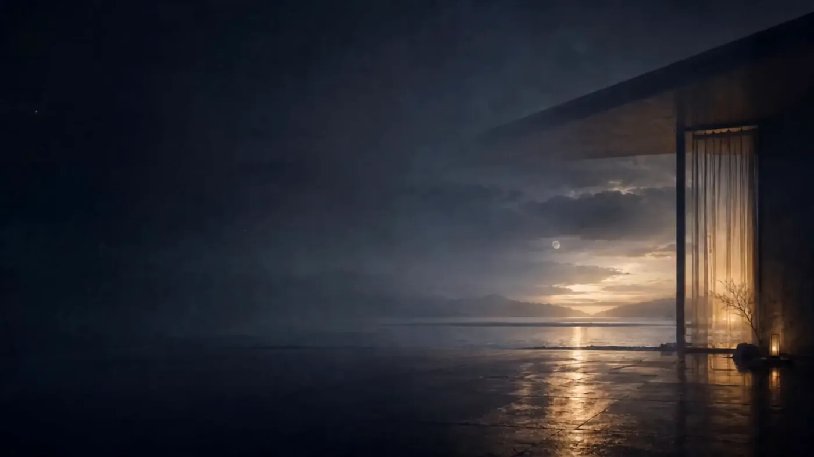
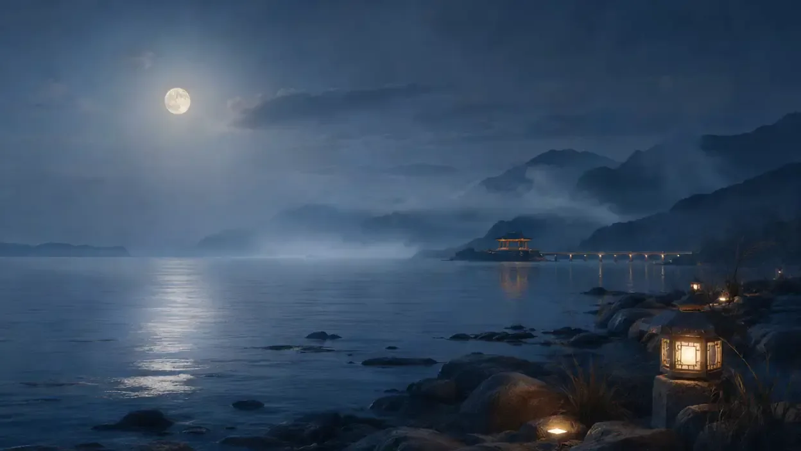
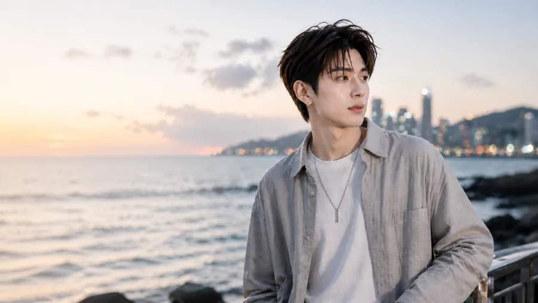
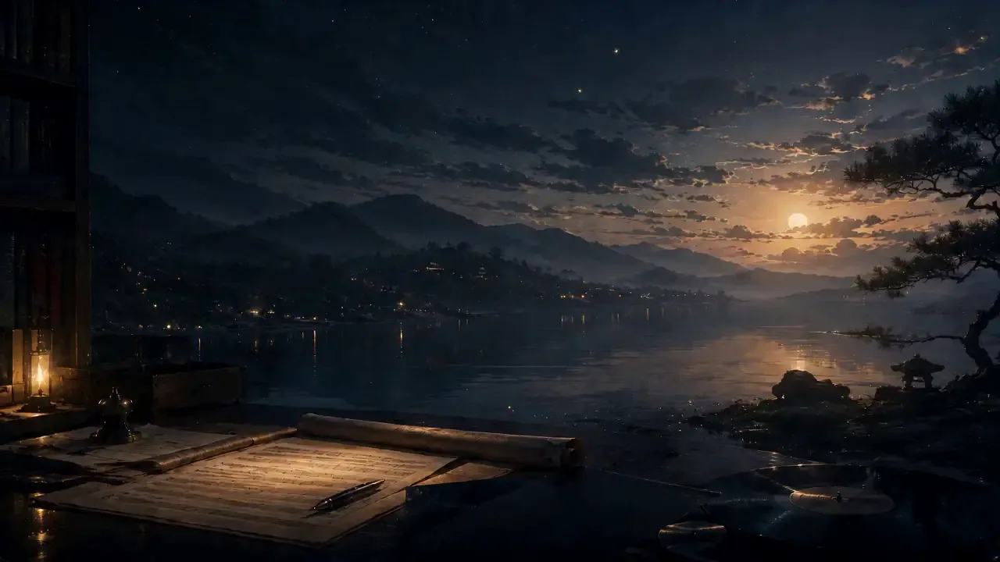
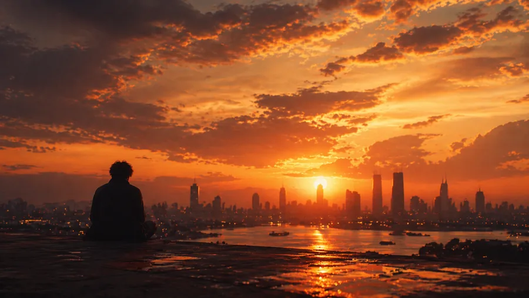

01 / INTIMACY
MOIRA 暮汐
A voice of emotional intimacy, memory, vulnerability, and quiet strength. Moira gives the stories held close to the heart a delicate, expressive voice.以细腻人声，诉说藏在心底的故事。暮汐的表达连接记忆、亲密、脆弱与安静的力量。

00 / MALTTRIX / THE SOUND DIMENSION梦萃 / 声音维度
An emotion-led cinematic music universe where intimate voices, original songs, and atmospheric soundscapes give unspoken feelings a place to belong.一个以情绪驱动的电影感音乐宇宙，让细腻人声、原创歌曲与器乐声景，安放那些难以言说的心事。
A listening experience. At your own pace.一场可以聆听的体验，依照你的节奏。

01 / OUR WORLD我们的世界

Some feelings arrive with the evening tide. Others linger in the rain, return through an old memory, or quietly fade with the first light of morning.有些情绪随晚潮而来，有些留在雨里，借一段旧回忆重返心间，或在晨光中慢慢散去。
VANMOIRA creates music for these moments. Through original songs and cinematic soundscapes, emotions become something we can hear, revisit, and gently carry forward.梵·暮汐为这些时刻创作。透过原创歌曲与电影感声景，让心事成为可以被聆听、被重访，也被温柔带向前方的声音。
Where emotions find their sound.让情绪，找到自己的声音。
02 / TWO VOICES. ONE UNIVERSE.两种声音，同一宇宙
A voice of emotional intimacy, memory, vulnerability, and quiet strength. Moira gives the stories held close to the heart a delicate, expressive voice.以细腻人声，诉说藏在心底的故事。暮汐的表达连接记忆、亲密、脆弱与安静的力量。

02 / OPEN SPACEA spacious, restrained presence: reflection, companionship, distance, and emotional depth. Van Yu lets songs and atmospheric compositions unfold at their own pace.宽阔而克制的声音语言，承载沉思、陪伴、距离与情绪深度。梵屿让歌曲与器乐声景，在留白中慢慢展开。
Two creative identities, not two separate genres. Both can move between original vocal music and instrumental soundscapes.两种创作身份，不是两种音乐形式的边界。暮汐与梵屿，都可以跨越原创人声与器乐声景。
03 / TWO SONIC EXPRESSIONS两种声音表达

01 / ORIGINAL MUSIC原创音乐
Intimate lyrics, expressive voices, and cinematic storytelling. From missed love and late-night closeness to nostalgia and brighter moments.以亲密歌词、情绪人声与电影式叙事，诉说错过、深夜的靠近、旧日回声与明亮时刻。
Explore four featured moods探索四颗精选胶囊 ↗02 / INSTRUMENTAL SOUNDSCAPES器乐声景
Instrumental and atmospheric works shaped by breath, space, silence, and slow-moving emotion. Room for reflection, restoration, and deep listening.由呼吸、空间、安静与缓慢情绪构成的器乐作品，为沉思、休整与深度聆听留下余地。
Explore three featured moods探索三颗精选胶囊 ↗04 / SEVEN MOOD CAPSULES七颗情绪胶囊
Seven ways into the same universe. Where would you like to begin?七个入口，同一个声音宇宙。此刻的你，想从哪里开始？

01 / 07
For the moment the city lights come on and someone still feels far away.当城市亮起灯，心里仍有一个遥远的人。
4 + 3 is a starting point, not a boundary. All seven capsules can travel across both musical forms. Listening suggestions are invitations to explore.4 + 3 是推荐起点，不是分类边界。七颗胶囊可以跨越两种音乐形式，推荐聆听也只是探索的邀请。
05 / SELECTED LISTENING精选聆听
Four first encounters. Original songs and instrumental worlds, with more to discover at VANMOIRA.四次初见。从原创歌曲到器乐世界，更多完整作品，在 VANMOIRA 等你。

Original vocal music原创人声音乐

Original vocal music原创人声音乐

Instrumental soundscape器乐声景

Instrumental soundscape器乐声景
Press play to hear an excerpt. Sound only begins when you choose.按下播放，开始试听。声音，只在你选择时响起。
06 / THE LANGUAGE OF SOUND声音的语言
Dusk, nightfall, water, and a trace of light. A continuous visual language that lets time be felt.暮色、夜晚、潮水与微光，形成持续的视觉母题，让时间的流动可以被感受。
Voices carry the story. Instruments leave room around it. Both make space for the listener’s own emotions.人声承载叙事，器乐保留情绪留白。两者都为听者自己的心事留下位置。
Characters, images, light, and music connect each release to a wider artistic world.以人物、影像、光线与音乐连接每一首作品，让不同故事属于同一个艺术宇宙。
07 / A SOUND DIMENSION BY MALTTRIX梦萃的声音维度
VANMOIRA / THE SOUND DIMENSION
VANMOIRA is the sound-focused creative brand within Malttrix, building original music, character-driven stories, and cinematic listening experiences.梵·暮汐是梦萃旗下专注声音的创意品牌，以原创音乐、角色叙事与电影感聆听体验，表达艺术情绪。
Its independent identity is part of a connected world of sound, vision, and cognition.它保有独立的艺术身份，也与声音、视觉和认知共同构成一个相互连接的创意世界。
Explore Malttrix认识梦萃 ↗08 / THE STORY CONTINUES故事仍在继续
Explore original songs, atmospheric soundscapes, and the stories behind VANMOIRA.让声音，陪你走过那些无法言说的时刻。继续探索原创歌曲、器乐声景与音乐背后的故事。
Listen & watch on YouTube在 YouTube 聆听与观看 ↗